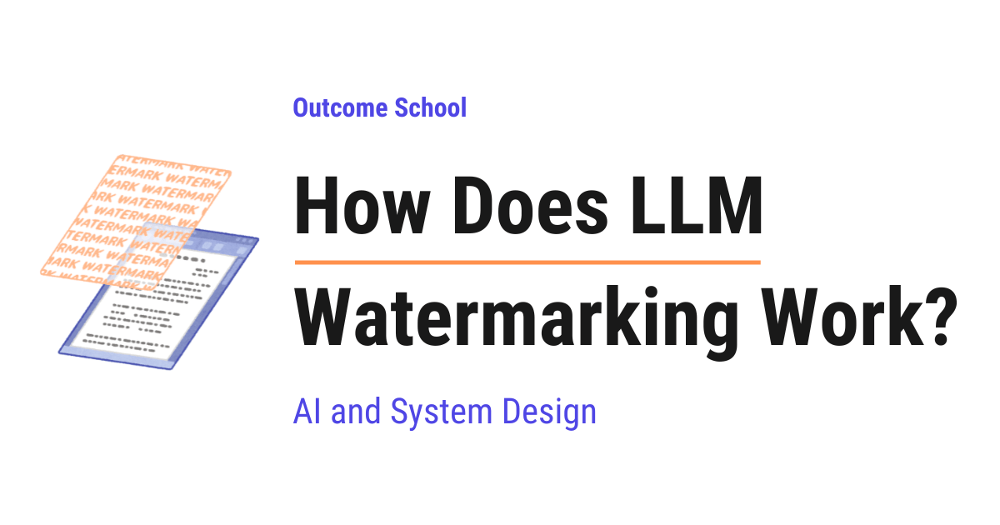

把钞票对着光，能看到纸里藏着的图案，那就是水印。但文本没有纸、也没有光，想给LLM写出的文字加上「水印」，标记只能藏在别处：藏在用词的选择里。
这篇文章把LLM水印的机制讲得很透：模型如何逐个token做选择、密钥如何悄悄改变这些选择而不动语义、检测器如何靠统计把它读出来，以及它在什么场景下可靠、什么场景下会失效。
拿一张钞票对着光，会看到纸里藏着一个图案，这就是水印。这里有两个特点值得注意：第一，水印不是像普通油墨那样印在票面之上，而是做在纸张内部；第二，日常使用时根本看不到它，只有对着光、刻意去找才会显现。所以水印是一种「在有人检查之前一直保持沉默」的隐藏标记，回答的是一个简单问题：这是谁做的？

LLM水印对文本做的是同一件事：在模型写出的文字里放一个隐藏标记。但难点在于，文本没有纸、也没有光，没法把图案藏进句子里，所以标记必须藏在别的地方，也就是藏在「用词的选择」里。
今天的LLM能写文章、邮件、答题、新闻甚至评论，写出来的文字和人类写作看起来完全一样。于是问题出现了：拿到一段文字，我们怎么知道是人写的还是机器写的？
几个真实场景：学生交作业，老师想知道是不是他自己写的；网站收到成千上万条商品评论，公司想知道是不是真实顾客写的；一篇新闻在社交媒体上传播，人们想知道是不是真人记者写的。这些场景都需要一种核查文本来源的办法。
单靠读文本解决不了这个问题，因为优秀的LLM写作看起来完全正常。于是在模型写字的同时，悄悄在文本里留下一个隐藏信号；之后任何持有密钥的人都可以检查这个信号。要理解这个信号怎么藏进去，得先看LLM是怎么写字的。
一个非常重要的前提：LLM一次只生成一个token。token是一小段文本，多数时候是一个词或词的一部分，为了便于理解可以把它当作一个词。
模型不会一口气写完整段回答，而是写一个token、回看此前所有内容、再写下一个token，如此反复直到回答结束。这种写法叫自回归生成。所以写一段几百词的话，意味着模型做了几百次独立的决定：而每一次决定，都是藏入信号的机会。
最好的理解方式是看例子。假设目前已经写出的文本是：
I am going to the ___现在模型要挑选下一个token。关键在于，模型不会直接给出一个词，而是先为每一个可能的下一token分配一个概率：
office → 0.31
park → 0.29
market → 0.22
gym → 0.18这里的数字表示模型认为某个词是正确答案的可能性：office的0.31意味着它有31% 的概率是下一个token，park的0.29意味着29%，以此类推。之后模型从这个列表里挑一个。没有任何水印时，模型会挑最强的那个选项，也就是office，于是句子成为「I am going to the office」。
Without watermark → office顺带说明：模型并不总是挑数字最高的那个，有时会故意挑一个较低的，让文字不显得重复。但数字越高、被挑中的概率越大，这一点始终成立，也是理解水印唯一需要的前提。
回头再看那组概率：office 0.31与park 0.29之间的差距很小；更重要的是，四个句子在语法上完全正确：
office → 0.31
park → 0.29
market → 0.22
gym → 0.18I am going to the office
I am going to the park
I am going to the market
I am going to the gym读其中任何一句都不会觉得别扭，没有语法错误，也没有奇怪的语义，没人会注意到异常。这份微小的自由度，正是水印赖以生存的空间：在多数步骤上，模型都有很多同样好的选项，没有任何一个是唯一正确的，于是我们可以在不伤害文本的前提下，轻轻把模型推向其中某些选项。
接下来的大问题是：该推哪些选项？如果总是推同样的词，读者会发现一种奇怪的重复风格；所以选择必须看起来随机。但同时又必须能在之后检查时复现同样的选择，否则永远无法检测。怎么做到「看起来随机、又能复现」？答案就是密钥。
密钥被当作种子，用来生成「看似随机但可复现」的token选择。先用一个简单例子理解「种子」：假设有一副牌和一台洗牌机，我们给机器一个数字，机器按这个数字洗牌。给7，机器产出一种特定的牌序，在我们看来完全被打乱了；再拿一副新牌给第二台机器输入7，会得到完全相同的牌序。所以7就是种子：它同时带来两件事：不知道种子的人觉得结果随机；知道种子的人可以重现结果。
这正是密钥在LLM水印里的作用，而拥有模型的公司在私密地保管这把密钥。
先认识一个词：词表（vocabulary），也就是模型被允许写出的全部token的清单，可以理解为模型的字典。真实模型的词表大约在五万到几十万token之间。
回到例子。模型即将选出「I am going to the」之后的下一个token，就在这一步，算法用密钥把整个词表分成两组：
Preferred tokens: park, market, school...
Other tokens: office, gym, house...注意：这个划分与语义或质量无关，并不是说park比office更好。它更像是为词表里每个词抛一次硬币，由密钥决定每一次的结果，这些词只是恰好落到了不同的一侧。在论文里这两组被称为绿名单与红名单，名字不重要，思路是一样的：一组获得一点推力，另一组没有。
现在我们手里有模型给出的原始概率，也有分好的两组。接下来对概率做轻微修改：偏好token得到小幅提升，其他token略微下降。例如：
office → 0.31 → 0.25
park → 0.29 → 0.36
market → 0.22 → 0.25
gym → 0.18 → 0.14可以看到：park与market是偏好token，数值上升；office与gym是其他token，数值下降。次序也变了，原本office以0.31居首，现在park以0.36居首。还有一点值得注意：两组里四个数字相加都仍然等于1，这个提升并没有凭空造出什么，只是把一点点概率从其他token转移到了偏好token上。
于是模型挑中park，句子成为「I am going to the park」。这句话完全正常，读者没有任何办法察觉这里发生过什么特殊的事，读起来就是普通写作。
另外要记住，推力的大小是一个可控设置：推力越大，水印越容易被检测，但也更频繁地把模型从它认为最好的词上拉开，质量会下降；推力越小，文字越好，但需要更长的文本才能让模式清晰。这是一个取舍，按使用场景来选。
关键在于：密钥并不会永久地把park标为偏好。到下一个token时，密钥加上当前上下文会产出一个不同的偏好集；在新集合里，park很容易落到另一组，office也可能进入偏好组。于是这个过程在每一步都在变化：密钥加上下文产生这一步的偏好token集，偏好token获得小幅概率提升，模型从修改后的概率里挑出下一个token，而这个新token又成为下一步的上下文，整个循环再跑一遍。
Secret key + context → preferred token set → small probability boost → next token这正是水印文本不会形成任何可见习惯的原因：没有任何固定的词反复出现，偏好组每一步都不同，读者抓不到重复。
还有一个更重要的原因。假设偏好组固定不变，那么任何人都可以大量生成文本、统计哪些词出现得「稍稍过于频繁」，从而慢慢还原整个偏好组；之后他们就能去除水印，甚至更糟：给自己的文本伪造水印，再栽赃给这个模型。正因为偏好组每一步都变，这种攻击不成立：没有密钥的外部人，看到的只是普通词、普通顺序。
最自然的问题是：既然每一步的变化这么小，怎么可能被检测出来？答案在数字里。一个token的变化极小，看起来完全正常；但放在上千个token上，偏好token出现的频率会高于随机应有的水平。
用硬币来理解：抛10次公正硬币得到6次正面，没人会觉得奇怪，这种事经常发生；但抛一万次得到八千次正面，我们就知道一定发生了什么：公正硬币不可能这样，这个数字离运气能达到的范围太远了。水印文本同理。
对于人类写的、或没有加水印的模型写的正常文本，大约一半token落在偏好组、一半落在另一组，因为划分本身就相当于抛硬币。但在水印文本里，偏好组在每一步都获得一点推力，于是远多于一半的token落在偏好组。
把数字具体化：一段1000 token的文本，如果没有水印，大约500个token会落在偏好组（可能是480或520，因为随机从不精确）；如果有水印，可能看到750个token落在偏好组。1000里出现750，绝不是运气能做到的，相当于抛1000次公正硬币得到750次正面，根本不会发生。对一句话来说这个差异没有意义，但在长长的段落上，这个差异就变得极难用运气解释。这就形成了统计模式：统计的意思是「无法在单个位置看到的模式」，只有在上大量文本上计数才能发现它，而这个模式就是水印。
整个流程是：把生成的文本交给水印检测器，检测器使用密钥检查统计模式，最终判定水印是否存在。具体分五步。
Generated text → watermark detector → uses the secret key → checks the statistical pattern → Watermark detected第一步，把文本交给检测器，检测器先把文本切成与模型相同粒度的token。第二步，检测器走到第一个token，查看它之前的上下文，用密钥与这段上下文重建当时使用的同一个偏好集：这之所以可行，是因为密钥是种子，同样的种子加同样的上下文总会得到同样的结果。第三步，检测器判断这个token属于偏好组还是另一组，并累计计数。第四步，移动到下一个token重复同样操作，一直到文本结束。第五步，把计数与纯随机的预期比较：如果偏好token接近一半，说明没有水印；如果远高于一半，说明水印存在。
这里有几个非常重要的点：检测器不需要LLM，只需要文本和密钥；不需要原始提示词；也不需要把生成过的文本存在什么地方，没有任何数据库，证据就在文本本身；检测器还能给出置信度，也就是说明「这种模式靠随机出现的可能性有多低」，让结论变得可度量。另外，因为检测器是逐个token计数的，它也能只对文本的一部分生效：比如学生写了一半、模型写了另一半，检测器可以显示模式在某一部分很强、在另一部分完全不存在。
但检测器确实需要密钥。这是一个很重要的限制：我们无法自行检查一段文本，只有拥有模型的机构、或被信任持有密钥的人才能跑这个检查；而密钥一旦泄露，任何人都能去除水印或伪造水印，整个系统就取决于这把密钥能否守住。
很多人用过号称能判断文本是否由AI写作的工具，它和上面讲的机制完全不同。AI文本检测器只读最终文本并做猜测：看文风、句子长度、用词的可预测程度等等，没有人给它任何密钥，它是从外部做出有根据的猜测。而水印检测器不做猜测：标记是在写作过程中被刻意放进去的，检测器用密钥把它打开。两者的差异可以对照如下。
所以两者各有位置：水印检测器可靠得多，但它只在模型方已经主动加水印的地方可用。
| AI文本检测器 | 水印检测器 |
|---|---|
| 读最终文本，靠文风猜测 | 读取写作时刻意植入的隐藏信号 |
| 不需要密钥，也不需要模型方配合 | 需要模型方的密钥 |
| 对任何模型的文本都能用 | 只对加了水印的模型的文本有效 |
| 经常把人类写作误判为AI写作 | 给出可度量的出错概率 |
一个自然的疑虑是：把模型从它最好的答案上推开，难道不会让文本变差吗？关键在于推力非常小。回到例子：office从0.31降到0.25，park从0.29升到0.36，模型仍然挑了一个它本来就认为不错的词，只是从第一好的选项换成了第二好的选项。
更重要的另一点是：在很多位置上，模型几乎没有自由度。比如「The capital of France is ___」，模型给出的分布可能是Paris 0.99、Lyon 0.004、Nice 0.003。Paris高达0.99，给其他token的小幅提升根本不可能超过它，所以模型仍然写出Paris。这对水印是好事：答案必须是事实的地方，水印自动让路；模型确实有很多同样好选项的地方，水印才发挥作用。也就是说，水印只占用模型本来就有的自由度。
Paris → 0.99
Lyon → 0.004
Nice → 0.003这也解释了短文本的局限：如果文本只有几个词，自由选择很少，可测量的模式也就很少。水印检测器需要足够多的token才能给出可信结论，所以短文本难以检查，长文本容易检查。
这是个很实际的问题，分三种情况。第一种，改动几个词：如果有人在长文中改了十个词，剩下几百个token仍然带着模式，检测器依然能发现水印，只是置信度略低。第二种，用不同词重写每一句：此时大部分token都是人或另一个模型的新选择，这些新token完全不知道密钥，只能靠随机落进偏好组，模式会大幅变弱，检测器可能漏掉水印。第三种，把文本翻译成另一种语言：几乎每个token都变了，水印基本上消失。
诚实的总结是：LLM水印能对抗小幅编辑，但在大量重写与翻译面前很脆弱；而且它只在模型方主动加水印时有效，没有水印的模型生成的文本永远无法用这种方式抓到。所以应当把水印当作一个有用的信号，而不是最终证据。
一个真实案例是Google DeepMind构建的SynthID，其中SynthID-Text这一部分做的正是本文讲的机制：在模型写作时轻微改变token的选择，持有密钥的检测器之后就能检查文本。
同样的思路也被用在文本之外：图像、音频与视频同样可以把隐藏信号放进像素或声音里，人眼与人耳都察觉不到，但检测器能读出来。核心思路处处相同：把信号藏进没人在意的小选择里，之后再用密钥读回来。
优点：文本质量几乎不变；不需要把任何东西存进数据库；检测给出的是可度量的置信度而不是猜测；读者看到的完全是正常文本。
缺点：大量重写或翻译会抹掉模式；短文本无法给出可信结论；密钥必须被保护好，一旦泄露整套机制就失效；它只对主动选择加水印的模型有效。
LLM一次写一个token，每一步都会为所有可能的下一token给出概率，然后挑一个。在多数步骤上，很多不同的token都能给出完全通顺的文本，这份自由度就是水印生存的空间。
密钥充当种子：每一步用密钥加当前上下文把词表分成偏好token与其他token，偏好token的概率获得小幅提升。偏好集并不固定，它每一步都在变化，因此文本不会形成任何可见习惯；一个token的变化极小所以毫无异样，但上千个token加在一起，偏好token的数量会远超随机允许的水平，于是形成统计模式。检测器拿到文本与密钥，逐步重建偏好集、统计偏好token的数量，再与随机预期比较。
所以水印不是看得见的标记，而是通过轻微改变token被选中的概率而制造出来的统计模式。
参考：https://outcomeschool.com/blog/how-does-llm-watermarking-work